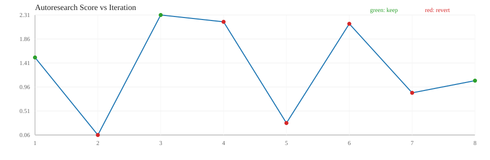

| ts | iter | bucket | proposal | decision | score | lat(ms) | gflops | reason | log messages |
|---|---|---|---|---|---|---|---|---|---|
| 2026-03-19T18:13:43 | 1 | medium | agent_heuristic | keep | 1.5114 | 0.6995 | 99.8036 | score_improved | iter=1 bucket=medium proposal=agent_heuristic candidate=blocked_pack|96|96|96|True|True|True|16|2|i8|i32 decision=keep score=1.511399 reason=score_improved note=heuristic_after_openai_fail |
| 2026-03-19T18:13:43 | 2 | medium | agent_heuristic | revert | 0.0612 | 21.4140 | 5.0069 | improvement_below_threshold | iter=2 bucket=medium proposal=agent_heuristic candidate=naive|0|0|0|False|False|False|1|1|i8|i32 decision=revert score=0.061156 reason=improvement_below_threshold note=heuristic_after_openai_fail |
| 2026-03-19T18:13:43 | 3 | medium | agent_heuristic | keep | 2.3061 | 0.4508 | 149.0672 | score_improved | iter=3 bucket=medium proposal=agent_heuristic candidate=blocked_pack|80|96|128|True|True|True|16|2|i8|i32 decision=keep score=2.306105 reason=score_improved note=heuristic_after_openai_fail |
| 2026-03-19T18:13:43 | 4 | medium | agent_heuristic | revert | 2.1784 | 0.4733 | 139.3079 | improvement_below_threshold | iter=4 bucket=medium proposal=agent_heuristic candidate=blocked_pack|80|96|128|True|True|True|16|1|i8|i32 decision=revert score=2.178438 reason=improvement_below_threshold note=heuristic_after_openai_fail |
| 2026-03-19T18:13:43 | 5 | medium | agent_heuristic | revert | 0.2849 | 4.5576 | 23.1634 | improvement_below_threshold | iter=5 bucket=medium proposal=agent_heuristic candidate=blocked|64|64|96|False|False|True|1|2|i8|i32 decision=revert score=0.284905 reason=improvement_below_threshold note=heuristic_after_openai_fail |
| 2026-03-19T18:13:43 | 6 | medium | agent_heuristic | revert | 2.1417 | 0.4821 | 137.2024 | improvement_below_threshold | iter=6 bucket=medium proposal=agent_heuristic candidate=blocked_pack|80|112|128|False|False|False|16|1|i8|i32 decision=revert score=2.141676 reason=improvement_below_threshold note=heuristic_after_openai_fail |
| 2026-03-19T18:13:44 | 7 | large | agent_heuristic | revert | 0.8502 | 77.3473 | 70.8828 | improvement_below_threshold | iter=7 bucket=large proposal=agent_heuristic candidate=blocked|48|32|96|False|False|True|4|2|i8|i32 decision=revert score=0.850243 reason=improvement_below_threshold note=heuristic_after_openai_fail |
| 2026-03-19T18:13:45 | 8 | large | agent_heuristic | keep | 1.0777 | 60.2636 | 89.1183 | score_improved | iter=8 bucket=large proposal=agent_heuristic candidate=blocked|48|64|32|True|True|True|4|1|i8|i32 decision=keep score=1.077668 reason=score_improved note=heuristic_after_openai_fail |